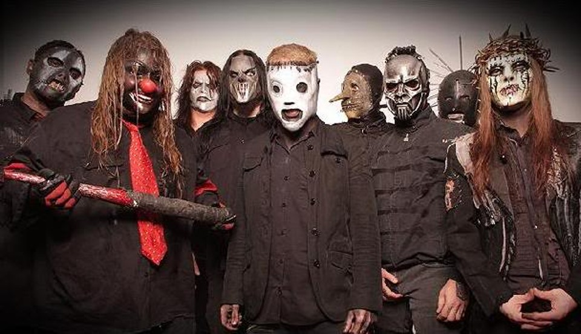
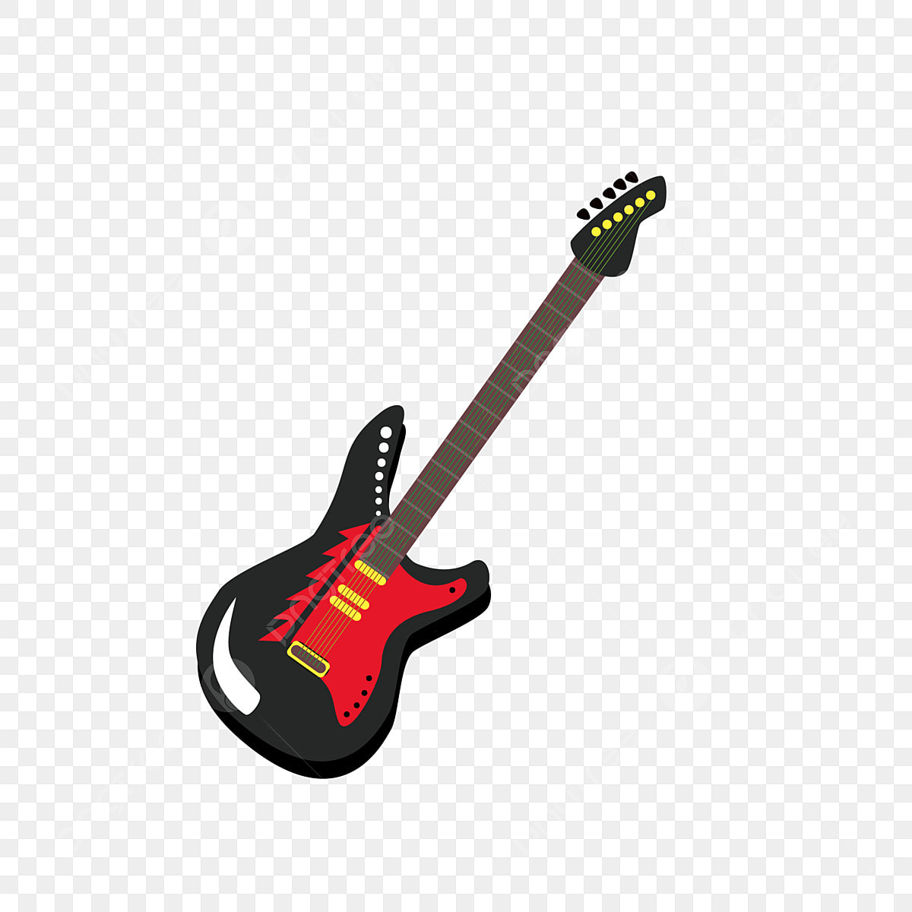

<!--Links de estilização-->
<link href="https://cdn.jsdelivr.net/npm/bootstrap@5.3.0/dist/css/bootstrap.min.css" rel="stylesheet" integrity="sha384-9ndCyUaIbzAi2FUVXJi0CjmCapSmO7SnpJef0486qhLnuZ2cdeRhO02iuK6FUUVM" crossorigin="anonymous">
<link rel="stylesheet" href="https://cdn.jsdelivr.net/npm/bootstrap-icons@1.10.5/font/bootstrap-icons.css">
<link href="../../static/css/style.css" rel="stylesheet">


<article class="container mt-5 mb-5">

    <a href="nomepost.html" target="_blank" rel="noopener noreferrer">
		<figure class="card mb-3">
				
				<figcaption class="card-body">
						<center><h5 class="cardtitle">Before Forget</h5></center>
						<p class="card-text">
                            Go
                            Stapled shut, inside an outside world and I'm
                            Sealed in tight, bizarre but right at home
                            Claustrophobic, closing in and I'm
                            Catastrophic, not again
                            I'm smeared across the page and doused in gasoline
                            I wear you like a stain, yet I'm the one who's obscene
                            Catch me up on all your sordid little insurrections
                            I've got no time to lose, I'm just caught up in all the cattle
                            Fray the strings, throw the shapes
                            Hold your breath, listen
                            I am a world before I am a man
                            I was a creature before I could stand
                            I will remember before I forget
                            Before I forget that
                            I am a world before I am a man
                            I was a creature before I could stand
                            I will remember before I forget
                            Before I forget that
                            I'm ripped across the ditch and settled in the dirt and I'm
                            I wear you like a stitch, yet I'm the one who's hurt
                            Pay attention to your twisted little indiscretions
                            I've got no right to win, I'm just caught up all the battles
                            Locked in clutch, pushed in place
                            Hold your breath, listen
                            I am a world before I am a man
                            I was a creature before I could stand
                            I will remember before I forget
                            Before I forget that
                            I am a world before I am a man
                            I was a creature before I could stand
                            I will remember before I forget
                            Before I forget that
                            My end, it justifies my means
                            All I ever do is delay
                            My every attempt to evade
                            The end of the road
                            And my end, it justifies my means
                            All I ever do is delay
                            My every attempt to evade
                            The end of the road
                            I am a world before I am a man
                            I was a creature before I could stand
                            I will remember before I forget
                            Before I forget that
                            I am a world before I am a man
                            I was a creature before I could stand
                            I will remember before I forget
                            Before I forget that
                            I am a world before I am a man
                            I was a creature before I could stand
                            I will remember before I forget
                            Before I forget that
                            Yeah, yeah, yeah, yeah
                            Yeah, yeah, yeah, oh
						</p>
						<p class="card-text"><small class="text-muted">22 de Julho de 2023</small></p>

						<div class="card py-2 px-4 m-3  identific">
							<div class="row g-0 aling-items-center">
								<div class="col-md-2">
									
								</div>
								<div class="col-md-10"><div class="card-body"><p class="card-text "><strong>Brunão</strong></p></div></div>
							</div>
						</div>
				</figcaption>
		</figure>
	</a>
</article>